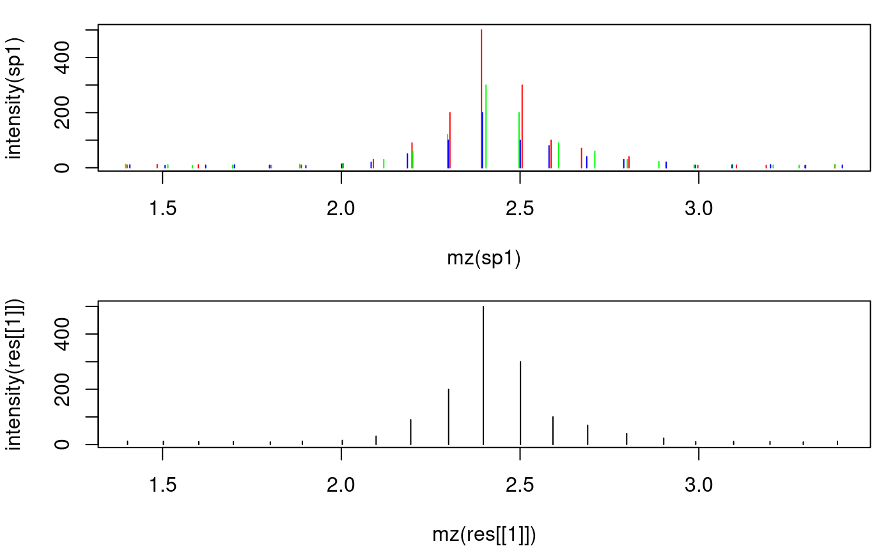

Combine signals from profile-mode spectra of consecutive scans into the values for the main spectrum. This can improve centroiding of profile-mode data by increasing the signal-to-noise ratio.
combineSpectra(x, mzFun = base::mean, intensityFun = base::mean, main = floor(length(x)/2L) + 1L, mzd, timeDomain = TRUE)
| x |
|
|---|---|
| mzFun |
|
| intensityFun |
|
| main |
|
| mzd |
|
| timeDomain |
|
Spectrum with m/z and intensity values representing the aggregated values
across the provided spectra. The returned spectrum contains the same number
of m/z and intensity pairs than the spectrum with index main in x, also
all other related information is taken from this spectrum.
The m/z values of the same ion in consecutive scans (spectra) of a LCMS run
will not be identical. Assuming that this random variation is much smaller
than the resolution of the MS instrument (i.e. the difference between
m/z values within each single spectrum), m/z value groups are defined
across the spectra and those containing m/z values of the main spectrum
are retained. The maximum allowed difference between m/z values for the
same ion is estimated as in estimateMzScattering(). Alternatively it is
possible to define this maximal m/z difference with the mzd parameter.
All m/z values with a difference smaller than this value are combined to
a m/z group.
Intensities and m/z values falling within each of these m/z groups are
aggregated using the intensity_fun and mz_fun, respectively. It is
highly likely that all QTOF profile data is collected with a timing circuit
that collects data points with regular intervals of time that are then later
converted into m/z values based on the relationship t = k * sqrt(m/z). The
m/z scale is thus non-linear and the m/z scattering (which is in fact caused
by small variations in the time circuit) will thus be different in the lower
and upper m/z scale. m/z-intensity pairs from consecutive scans to be
combined are therefore defined by default on the square root of the m/z
values. With timeDomain = FALSE, the actual m/z values will be used.
estimateMzScattering() for a function to estimate m/z scattering
in consecutive scans.
estimateMzResolution() for a function estimating the m/z resolution of
a spectrum.
combineSpectraMovingWindow() for the function to combine consecutive
spectra of an MSnExp object using a moving window approach.
library(MSnbase) ## Create 3 example profile-mode spectra with a resolution of 0.1 and small ## random variations on these m/z values on consecutive scans. set.seed(123) mzs <- seq(1, 20, 0.1) ints1 <- abs(rnorm(length(mzs), 10)) ints1[11:20] <- c(15, 30, 90, 200, 500, 300, 100, 70, 40, 20) # add peak ints2 <- abs(rnorm(length(mzs), 10)) ints2[11:20] <- c(15, 30, 60, 120, 300, 200, 90, 60, 30, 23) ints3 <- abs(rnorm(length(mzs), 10)) ints3[11:20] <- c(13, 20, 50, 100, 200, 100, 80, 40, 30, 20) ## Create the spectra. sp1 <- new("Spectrum1", mz = mzs + rnorm(length(mzs), sd = 0.01), intensity = ints1) sp2 <- new("Spectrum1", mz = mzs + rnorm(length(mzs), sd = 0.01), intensity = ints2) sp3 <- new("Spectrum1", mz = mzs + rnorm(length(mzs), sd = 0.009), intensity = ints3) ## Combine the spectra sp_agg <- combineSpectra(list(sp1, sp2, sp3)) ## Plot the spectra before and after combining par(mfrow = c(2, 1), mar = c(4.3, 4, 1, 1)) plot(mz(sp1), intensity(sp1), xlim = range(mzs[5:25]), type = "h", col = "red") points(mz(sp2), intensity(sp2), type = "h", col = "green") points(mz(sp3), intensity(sp3), type = "h", col = "blue") plot(mz(sp_agg), intensity(sp_agg), xlim = range(mzs[5:25]), type = "h", col = "black")